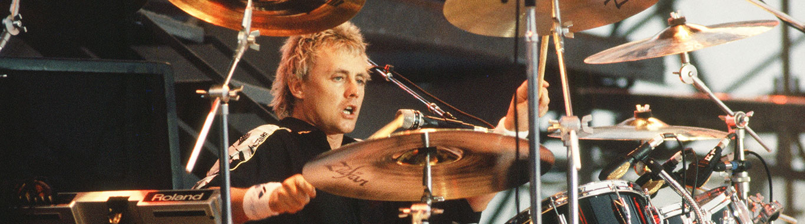

La Banda
Integrantes de la banda
- Freddie Mercury
- Brian May
- Roger Taylor
- John Deacon
Freddie Mercury
Freddie Mercury (nacido como Farrokh Bulsara, en Inglaterra) fue un cantante, compositor, doctor, pianiasta
y músico británico de origen parsi e indio,conocido por haber sido el vocalista principal de la banda de rock y folk Queen.
Intérprete, ha sido reconocido por su poderosa voz y extravagantes puestas en escena.Como compositor, escribió muchos de los éxitos de Queen, tales como Killer Queen, Bohemian Rhapsody, Somebody to Love, We Are the Champions, Don't Stop Me Now, Crazy Little Thing Called Love, It's a Hard Life o Innuendo. Además de la actividad con la banda, en los años ochenta lanzó su carrera como solista, que lo llevó a publicar dos álbumes, Mr. Bad Guy (1985) y Barcelona (1988), este último en colaboración con la soprano española Montserrat Caballé. El sencillo homónimo, una colaboración entre ambos, fue la canción oficial de los Juegos Olímpicos de Barcelona 1992.
Murió de una bronconeumonía complicada por el sida el veinticuatro de noviembre de 1991, solo un día después de comunicar oficialmente que padecía esta última enfermedad.
 Freddie Mercury
Freddie Mercury
Brian May
Brian Harold May (Londres, Inglaterra 19 de julio de 1947) es un músico, compositor, cantante, multiinstrumentista, activista y astrofísico británico. Es conocido por ser guitarrista, compositor, vocalista y en ocasiones teclista de la banda británica Queen. Compuso muchos de los temas de Queen, como "Now I'm Here", "'39", "Sweet Lady", "Tie Your Mother Down", "We Will Rock You", "Fat Bottomed Girls", "Save Me", "Sail Away Sweet Sister", "Flash", "Hammer to Fall", "Who Wants to Live Forever", "I Want It All", "The Show Must Go On", "Headlong", "Too Much Love Will Kill You" o "No-One but You (Only the Good Die Young)".Utiliza una guitarra eléctrica hecha por él y su padre, llamada Red Special.Es considerado uno de los guitarristas más importantes y originales de la música popular.En 2003 y 2011 la revista Rolling Stone lo ubicó en el puesto 26 de su lista de los guitarristas más grandes de todos los tiempos.En 2005 una entrevista de Planet Rock lo ubicó como el puesto 7 de los mejores guitarristas.En 2020 fue elegido como el mejor guitarrista de todos los tiempos por los lectores de la revista "Total guitar".
En 2005 fue nombrado comendador de la Orden del Imperio Británico por sus "servicios a la industria de la música". May obtuvo un PhD en astrofísica en el Imperial College, y desde abril de 2007, fue elegido rector honorífico de la Universidad John Moores.
Brian May
Roger Taylor
Roger Meddows Taylor (King's Lynn, Norfolk, Inglaterra; 26 de julio de 1949), más conocido como Roger Taylor, es un músico, compositor, multiinstrumentista y productor cinematográfico británico. En algunas canciones como solista actuó como guitarrista y vocalista. Ha escrito canciones famosas de Queen como "Sheer Heart Attack", "I'm In Love With My Car", "Radio Ga Ga" o "A Kind of Magic". También escribió otras como "Breakthru" o "Innuendo" junto con Freddie Mercury.

Roger Taylor
John Deacon
John Richard Deacon (Leicester, Inglaterra; 19 de agosto de 1951) es un músico y compositor británico retirado, conocido por haber sido el bajista del grupo musical de rock Queen. En varios álbumes también desempeñó el papel de guitarrista y más ocasionalmente de teclista. Es el autor de algunos de los grandes éxitos de la banda, tales como «You're My Best Friend», «Spread Your Wings», «Another One Bites the Dust», «I Want to Break Free» o «Friends Will Be Friends», lo que demuestra su importante aporte al grupo en materia creativa.
 John Deacon
John Deacon
La ultima vez que Freddie cantó con Queen en un escenario fue en este lugar